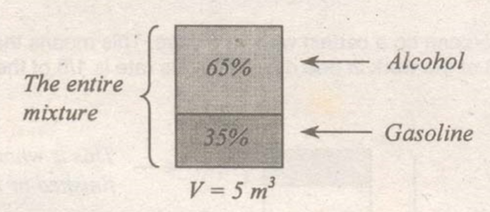
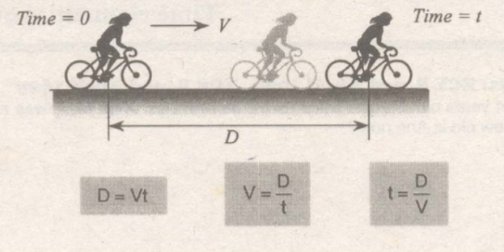

One of the most common problems in Algebra is the age problem. This type of problem must be solve meticulously by giving more emphasis to the tenses (i.e. past, present or future) of the statements.
Example: The ages of the certain person in the past, present and future in terms of x are as follows:
| 6 years ago | Present | 5 years hence |
| $x-6$ | $x$ | $x+5$ |
Suppose that a person can do a certain work in 5 days. This means that the said person can finish 1/5 of the work in one day. Thus, his rate is 1/5 of the work per day.
For a complete job,
$$rt=1\ \ \ \ \ \text{or}\ \ \ \ \ \ r={1 \over t}$$
where:
r = rate of doing the work
t = time to finish the work
When there is a specific work and specific time and manpower, the rate of doing the work may be computed using the number of man-hour.
For example:
If 20 bakers can bake 40 pizzas in 8 hours, how many bakers can bake 10 pizzas in 2 hours?
The solution is to get the rate (in man-hour) of baking a pizza:
$$\eqalign{
& \text{Rate} = {{20\text{ bakers}(8\text{ hours})} \over {40\text{ pizzas}}} \cr
& \text{Rate} = {{4\text{ baker} - \text{hr}} \over {\text{ pizza}}} \cr} $$
This means that to bake a pizza, you need either 4 bakers in 1hour or 1 baker in 4 hours.
$$\text{No. of bakers} = \left( {{{4\text{ baker} - \text{hour}} \over {\text{pizza}}}} \right)\left( {{{10\text{ pizzas}} \over {2\text{ hours}}}} \right) = 20\text{ bakers}$$
The easiest way to solve a mixture problem is to draw a rectangle or square which will illustrate the content of the mixture as shown in the following illustration.
Consider a 5 cubic meter mixture containing 65% alcohol and 35% gasoline:
The quantity of alcohol is $(0.65)(5) = 3.25 \text{ cu. meters}$ while the quantity of gasoline is $(0.35)(5)=1.75 \text{ cu. meters}$.
Let h, t and u be the hundreds', tens', and units' digit, respectively. A three-digit number must be represented in the following manner:
$$\text{Number}=h(100)+t(10)+u$$
A two-digit number is represented by:
$$\text{Number}=t(10)+u$$
In algebra, the problems pertaining to motion deals only with a uniform velocity, i.e, no acceleration nor deceleration in the process. The following is the relationship between the distance, time and velocity.
For problems involving COINS:
Under American denomination, US Dollar, the following are the coins and their corresponding equivalent:
Penny = 1 cent
Nickel = 5 cents
Dime = 10 cents
Quarter = 25 cents
Half = 50 cents